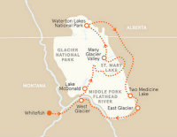

Montana High Country!
Length: 6 Days
Skill Level: Intermediate to Advanced
Cost:$2,353
Location: Helena, MT

Enjoy the views that earned Montana its "Big Sky" nickname. Pedal through sacred native ground as you tackle the Continental Divide on Chief Joseph Pass. Soak up plenty of Lewis & Clark history, including the headwaters of the Missouri River. Ride the gorgeous Pioneer Mountains Scenic Byway through the ghost towns and abandoned mines of the Pioneer Mountain Range. Recharge in beautifully scenic lodges as you experience genuine Montana country along the eastern edge of the Rocky Mountain Range.
Click to Register!